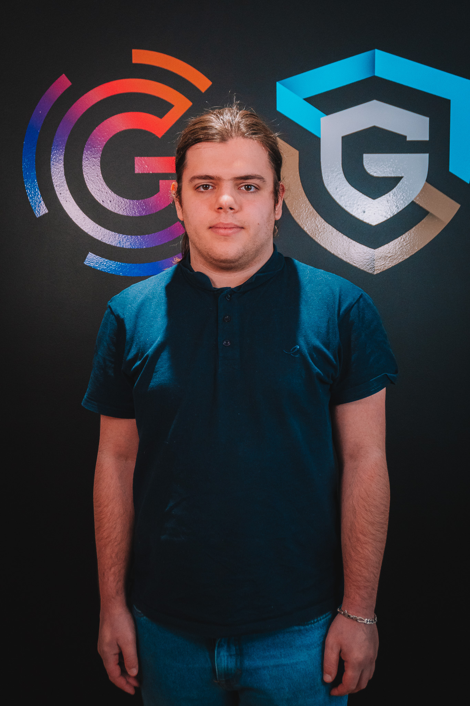

Gaëtan Peronnet
FR
EN
À propos
Projets
Contact
À propos de moi

Projets
Unity
Projet Unity 1
Projet Unity 2
Unreal
Projet Unreal 1
Projet Unreal 2
Web
Projet Web 1
Projet Web 2
Contact
GitHub
LinkedIn